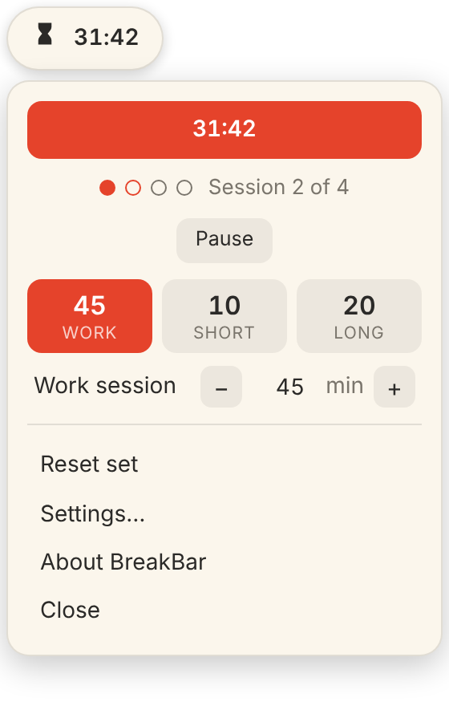
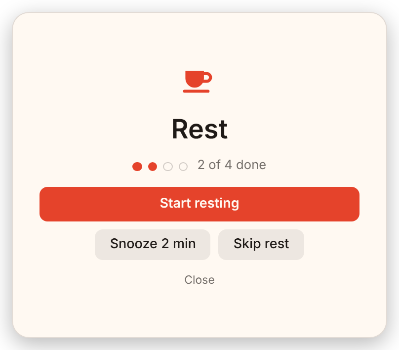
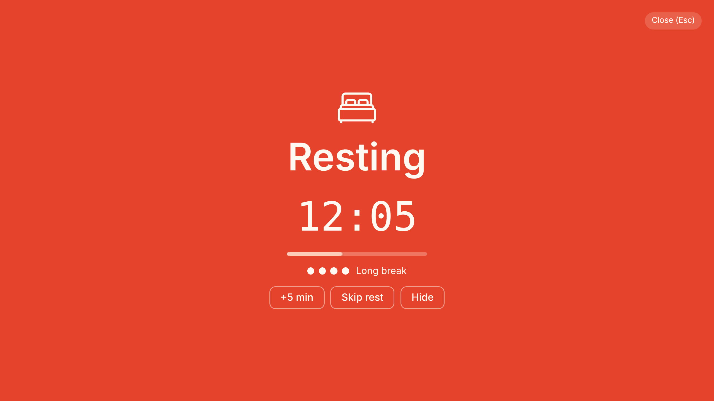
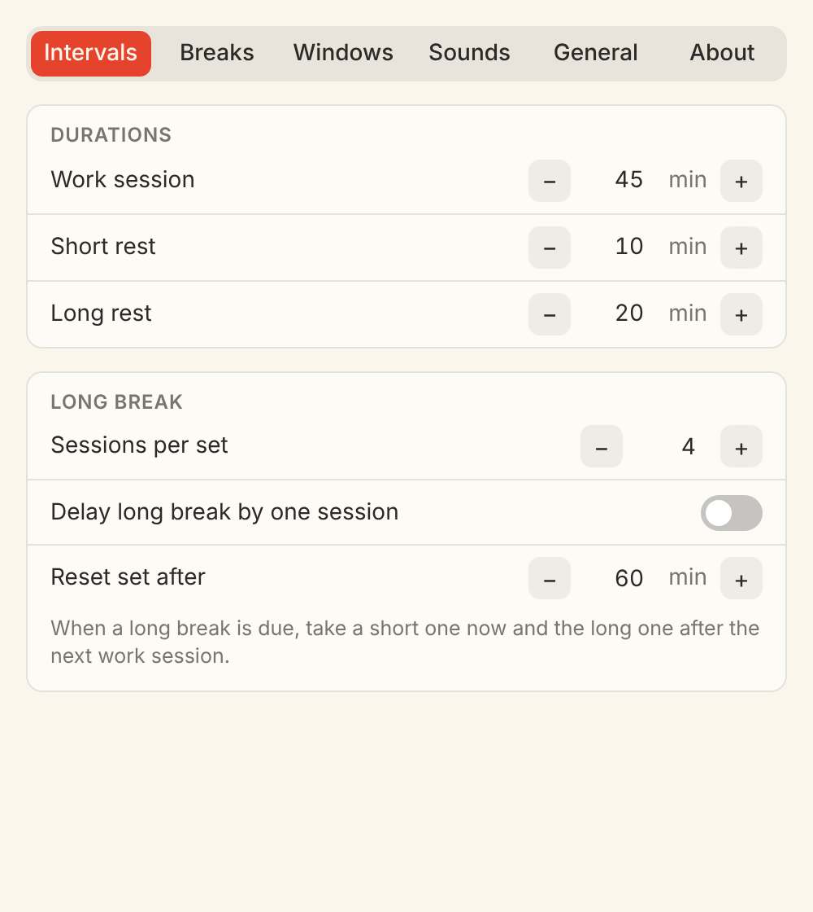

A small floating Pomodoro timer. When a work session ends, a Rest window asks you to take a break.
Download for Windows Mac version

It sits above your other windows, not on the taskbar. Click it for the dropdown, drag it anywhere, and it fades when you are not using it.
45 minutes of work, then 10 minutes of rest, with a longer 20 minute rest after every fourth session. Change any of it by typing a number.
Start resting, snooze or skip. Then a countdown, and a Start working window when the break is over.
Small floating window, maximised window, full-screen overlay (every display) or a notification-style banner. Settings has a Preview for each.


Windup, ding and ticking with their own volumes, and Windows toasts.
Global hotkeys, and breakbar://start, --toggle and friends for other programs.
Nothing leaves your PC. Settings are a small JSON file in your user folder.
Download BreakBar-Setup.exe (installs for your user, no administrator password) or the portable BreakBar-windows-x64.zip.
BreakBar is not code-signed, so Windows SmartScreen warns the first time. Click More info, then Run anyway. Needs Windows 10 or 11, 64-bit.